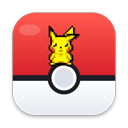

Delete Immediately
- Select a file in Finder
- Press ⌥⌘⌫
- Gone. Not in the Trash
Nothing to put back.

PokéPetsPokéPets puts a Pokémon on your Mac. It walks the Dock, climbs the files on your desktop, gets hungry, grows up and evolves. Ask nicely and it deletes things for you, into the Trash, with an attack.
Pick a Pokémon, then ask it for something. Same sprites and the same move list as the app. Everything is unlocked here; in the app, moves come with levels.
$ make test && pokepets celebrate || pokepets fail(press a button to run it)
In Finder, ⌥⌘⌫ is Delete Immediately. No Trash, no undo. PokéPets takes over that one shortcut (only while Finder is in front) so the same keys do something better.
Nothing to put back.
You raise one line at a time. Every Pokémon starts as an Egg in the menu bar dial. Click it and it hatches; the one already out goes back into its ball.
Each of these is a real routine from the app, played here with the app's sprites and its own pixel effects. Hit one and Gengar goes and does it on the sample desktop above.
Along the bottom of the screen, up onto the Dock, across the icons on your desktop. They come over when your cursor does, and stay behind full-screen windows, videos and YouTube. The overlay is click-through: it only catches the mouse when you are actually over a Pokémon.
Hungry about every half hour; drag a berry onto it. Real EXP curves from Lv 1 to 100, friendship from 0 to 255, 25 natures, a 1 in 4096 shiny roll. Leave it alone for 20 minutes and it sulks. Drop it from a height and it cries.
Charger, battery, heat, Wi-Fi, your camera, music, and you stepping away for five minutes. At 5% battery it faints until you plug in. Camera on, it goes back in its ball for your call.
The Downloads guard spots files over 500 MB, duplicate copies and installers you are done with, then offers Delete or Keep right in the notification. Once per file, and it never touches anything without a yes.
A pet that evolves or deletes things on its own would be a worse pet. Two places where it waits for you:
| Do this | To get this |
|---|---|
| Click the Poké Ball in the menu bar | Open the party dial: send out or recall, check stats, grab berries and evolution items. Right-click for Settings and Quit. |
| Drag a berry onto your Pokémon | Feed it. Each one has a favourite and a berry it dislikes. |
| Hover over it | Pet it. Hearts, and friendship if it is warming to you. Shy natures keep their distance at first. |
| Drag it about, swing it, let go | Pick it up, make it dizzy, drop it. |
| Select files in Finder, press ⌥⌘⌫ | It deletes them into the Trash, with a move. |
| Drag a Thunder Stone or Linking Cord onto it | Evolve it, once it is ready. |
PokéPets answers to a URL scheme, so a script, a git hook or an AI agent can make your Pokémon react. bin/pokepets is a one-line wrapper around open -g pokepets://….
make && bin/pokepets celebrate || bin/pokepets fail| Command | What happens | Try it |
|---|---|---|
pokepets celebrate | Build passed: joyous, a Thunder Shock or happy pose | |
pokepets fail | Build failed: it faints for a few seconds | |
pokepets done | A long job or an agent finished: hearts | |
pokepets hello | Just says hi | |
pokepets focus / unfocus | Goes quiet and sleeps / wakes up. Wire it to a Focus mode with a Shortcuts automation. | app only |
About 8,000 lines of Swift in 19 files, no third-party dependencies. One shared engine; a species is a small subclass with its sprites, moves, ability and evolution rules.
bin/try fly gengar # relaunch running one demobin/try <demo> <who> relaunches the app running one routine (dock, files, levelup, phase, clone, snatch…) so you do not wait for it to decide to.bin/import-sprites.swift imports a Pokémon and its shiny from PMD SpriteCollab and adds the artists to the credits.There is no per-frame loop: the walk cycle is a keyframe animation over the sprite sheet, movement is a Core Animation move, and the app wakes only to decide. (This page works the same way, with the Web Animations API.)
Paste it into Terminal. It downloads PokéPets, checks the file against its published SHA-256, copies it into Applications and opens it. Needs macOS 14 (Sonoma) or later; Apple silicon and Intel Macs both work.
curl -fsSL https://raw.githubusercontent.com/YashTygi/PokePets/main/docs/install.sh | shPokePets.dmg and its checksum from this repository.PokePets.app into /Applications (into ~/Applications if that isn't writable). An older copy is replaced; your Pokémon are kept.No sudo, no shell or login-item edits. It is about 80 lines: read it first.
macOS stops anything a browser downloads that Apple hasn't notarized (notarizing costs $99 a year, and PokéPets is free). A file fetched with curl never gets that mark. The warning is the only thing skipped; the checksum is the check that remains.
curl -fsSL https://raw.githubusercontent.com/YashTygi/PokePets/main/docs/uninstall.sh | shMoves the app to the Trash and keeps your Pokémon. Add -s -- --purge after sh to remove them too.
PokéPets isn't notarized by Apple, so the first time you open something you downloaded in a browser, macOS says it can't verify it. That is expected. It takes about 30 seconds.
Apple could not verify “PokePets.dmg” is free of malware that may harm your Mac or compromise your privacy.
Prefer Terminal? xattr -dr com.apple.quarantine /Applications/PokePets.app clears the mark on the app, or use the one-line install, which never gets it.
git clone https://github.com/YashTygi/PokePets.git
cd PokePets
open PokePets.xcodeprojIn Xcode, select the PokePets target, open Signing & Capabilities and choose your own Team (a free personal one is enough). It needs Xcode 16 or later. The build lands in ~/Applications/PokePets.app and launches.
A short welcome guide sets the house rules and asks for each permission one at a time. Then click the Poké Ball in the menu bar and click the Egg.
Every permission is optional, and each one is asked for once, with the reason, by the welcome guide.
| Permission | What it is for | If you say no |
|---|---|---|
| Notifications | Level-ups, hunger, evolution prompts, the Downloads guard | They stay quiet; captions still show |
| Automation → Finder | Finds your desktop files so it can climb them | No file climbing |
| Automation → your browser | Notices a YouTube video so it stays out of the way | It will not hide for YouTube in that browser |
| Accessibility | Aims the Thunderbolt at the file's exact icon | Files still go to the Trash, aimed less precisely |
| Files & Folders → Downloads | The Downloads guard | The guard stays off |
It only deletes what you point it at (select files in Finder and press ⌥⌘⌫, or ⌥-drop them on it) or what you say yes to in a Downloads guard notification. Every delete goes to the Trash, never erased, so you can put it back. While the delete move is on, PokéPets takes over only the ⌥⌘⌫ shortcut, and only while Finder is in front. You can switch the move off in Settings.
Only to see where Finder draws a file's icon, so the Thunderbolt or Shadow Ball lands on it. Without it, deleting still works, just aimed less precisely. It is optional and the app explains it before asking.
It is built not to: no per-frame loop, one see-through window, sensors that wake it only when something changes (the charger, Wi-Fi, heat, a file landing in Downloads). Two small timers do run: an idle check every 20 seconds, and, while it is allowed to walk over your apps, a look every 2 seconds at whether the front app is full screen. I have not published CPU or memory measurements yet, so I am not going to put a number on it.
Not yet. Today the Pokémon live on your main display.
Use the one-line Terminal install, or download PokePets.dmg (about 7 MB, Apple silicon and Intel). Both are in this repository, and the script checks the DMG's SHA-256 before it installs anything. Details are in Install.
Apple only waves through apps it has notarized, and notarizing needs a paid developer account ($99 a year). PokéPets is free, so a DMG you download in a browser is stopped once. Click Done (not Move to Bin), then open System Settings → Privacy & Security, scroll to Security and click Open Anyway. The steps are on the DMG tab. The one-line install avoids the prompt, because curl downloads aren't marked.
It is a sensible thing to ask. install.sh is short enough to read in a couple of minutes. It downloads two files from this repository, refuses to continue unless the SHA-256 matches, copies the app to Applications, clears macOS's downloaded-from-the-internet mark from that copy, and opens it. It never uses sudo and doesn't touch your shell settings. The app itself is open source in the same repository, so you can build it yourself instead.
Paste curl -fsSL https://raw.githubusercontent.com/YashTygi/PokePets/main/docs/uninstall.sh | sh into Terminal. It quits PokéPets and moves the app to the Trash, and keeps your Pokémon so a reinstall brings them back. Add -s -- --purge after sh to remove their save and settings and reset the permissions you gave it. Or just drag PokePets from Applications to the Trash.
They already have slots in the party screen and are planned, but nothing is built. The two lines here are finished enough to live with, and I would rather get them right first.
No. The app makes no network requests, has no account and no analytics. The Pokémon data (learnsets, growth rates, natures, Pokédex text) is baked in, and your party is saved in your Mac's own settings.
No. Pokémon and its characters belong to Nintendo, Creatures Inc. and GAME FREAK inc. PokéPets is an unofficial, non-commercial fan project, not affiliated with or endorsed by them, and it is not for sale. Some of the sprites are CC BY-NC 4.0, so keep it that way if you fork it.
It is the real sprites, move lists, lines and pixel effects, rebuilt for the browser so you can poke at them. The app itself runs on your actual desktop, with real files and real sensors. The charger, battery and Wi-Fi in the sample are pretend.